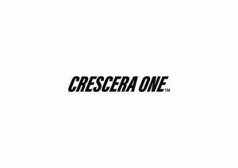
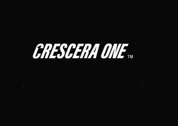

Trade Mark Journal No.2026/010 6 March 2026
UK00004340394 13 February 2026 (9,14,18,25,26)
Mark 1

Mark 2

- Class 9
- Lanyards for mobile telephones; Lanyards for cell phones; Mobile telephone cases; Mobile phone cases; Cases for mobile phones; Cellular telephone cases; Carrying cases for mobile telephones; Phone cases; Cases adapted for mobile phones; Carrying cases for mobile phones; Protective cases for mobile phones; Mobile telephone covers.
- Class 14
- Lanyards for keys; Keyrings.
- Class 18
- Sports bags; Bags for sports clothing; All-purpose sports bags; Athletics bags; Holdalls for sports clothing; Sports packs; All purpose sports bags; Bags; Gym bags; School bags.
- Class 25
- Clothing; articles of outer clothing; articles of sports clothing; leisurewear; beach wear; waterproof clothing; sweatshirts; jumpers and knitwear; hoodies; hooded tops; shorts; trousers; skirts; shirts and blouses; scarves; ties; coats, anoraks and jackets; gloves; nightwear; dressing gowns; shoes and boots; sports shoes; slippers; sandals; articles of underwear; socks; boxer shorts; caps; hats; all replica and matchday clothing ranges.
- Class 26
- Lanyards for wear.
OSO ENTERPRISES KORLATOLT FELELOSSEGU TARSASAG
Representative: Chadwick Lawrence LLP